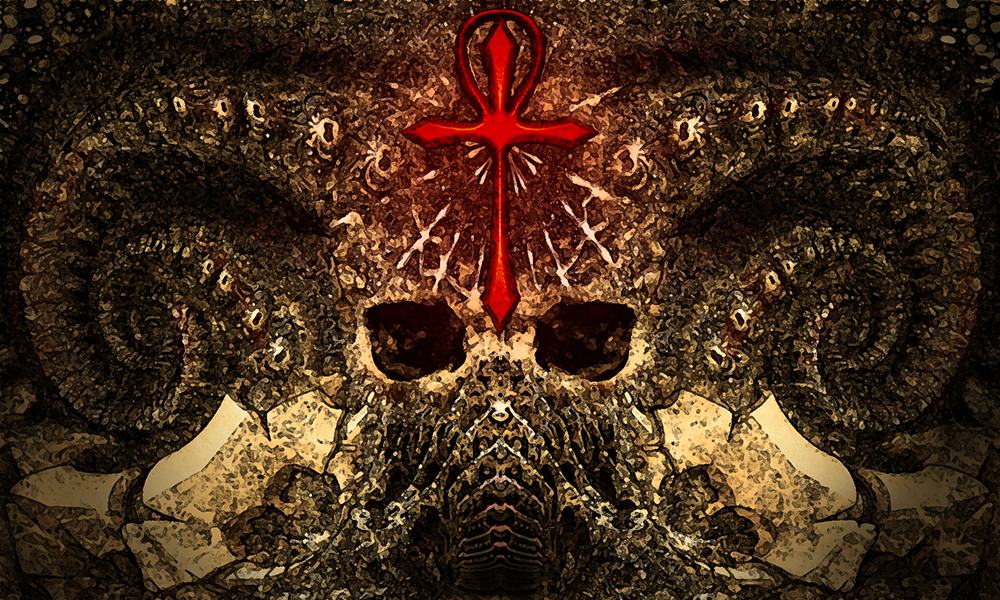

The way we work is in flux, as changing social, industrial, political, and environmental factors work their effects, and this makes for a rich resource in speculative fiction that Mythaxis has mined before. Erik Mann's opener gives another glimpse of how employment may feel in the world to come—how for some it may feel already…


Mandira Pattnaik has been published in a startling number of forums around the world, and her work includes poetry, non-fiction, and (fortunately for us!) short stories. Here she provides a contemplative, understated ecological fantasy about loss and rebirth that offers a glimmer of optimism for a roughly-treated world, which is at least a starting place.

The experiences of the neuroatypical—including of being surrounded by the supposedly monolythically typical—are often depicted as a no-win feedback loop, made worse as much by attempts to bring poor sufferers into the norm as by abandonment to their fate. But Gunnar De Winter's story points out that context is everything, and if in space no one can hear you scream, perhaps it's because you no longer feel the urge.
The first big read of the issue, Celine Low takes her inspiration from the nomadic civilisations of the Mongolian steppes and delivers a fantastical coming-of-age adventure that melds action and magic, loyalty and friendship, greed and evil, all sprinkled with hints of that most traditional of narrative forms: the passing down of spoken tales from one generation to another.
Our next story also has an air of the traditional to it—this time Owen G. Tabard takes us into the territory of the folktale, in which everyman heroes make rash promises in search of glittering rewards, and devastating rules of three (and other fearsome narrative monsters) lie in wait for the misguided.

Here we have the first of two returnees to Mythaxis. Jeffery Scott Sims graced i23 with an entertaining blend of the noirish detective and Lovecraftian occult. This time he offers something shorter, but no less sinister: another yarn of seekers after esoteric knowledge not meant for human ken, once again delivered in a classic style.
We wrap up the issue with our second repeat offender. David Whitmarsh's contribution to i25 had notes of the post-apocalyptic to it, but was ultimately about the beginning of someone's story. This piece is laced with endings, and has hints of the pre-apocalyptic lurking within. It also boasts a uniquely alien point of view…